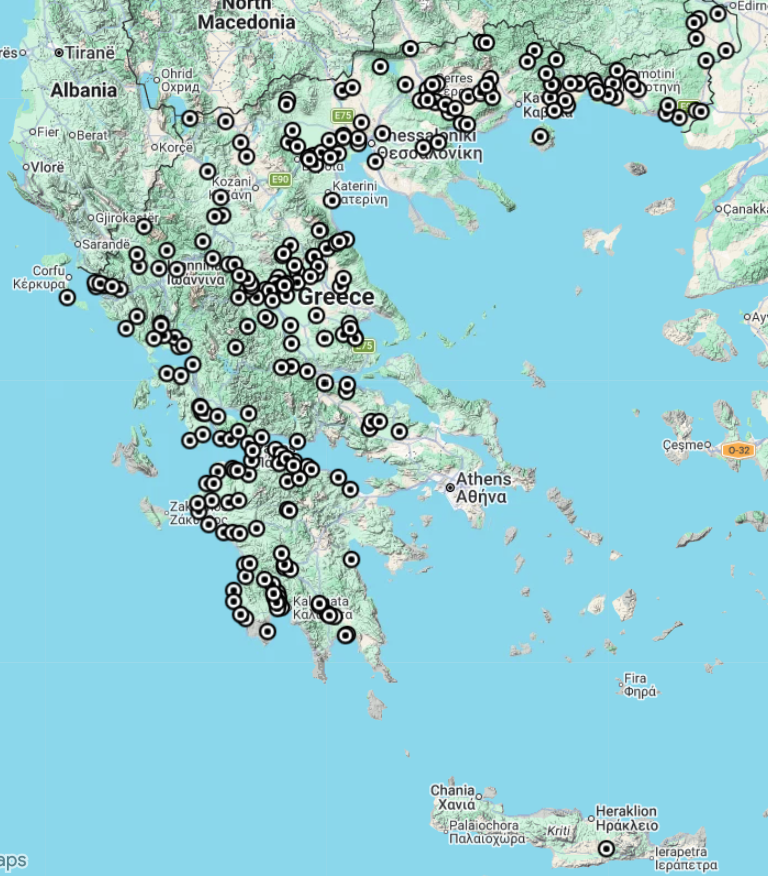
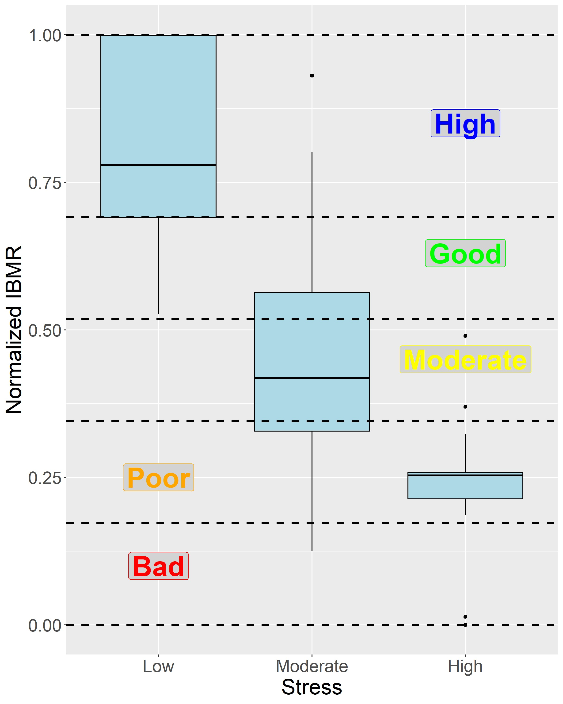

Project overview
In accordance with the European Water Framework Directive (WFD 2000/60/EC), national ecological monitoring is essential for evaluating the biological status, health, and trend of inland aquatic ecosystems. Aquatic macrophytes serve as key biological quality indicators in running waters due to their sensitivity to nutrient enrichment, hydromorphological alterations, flow regulation, and land-use pressures.
This long-term national project focuses on systematic sampling, assessment, and classification of ecological quality across Greek rivers and streams. By integrating macrophyte community metrics with water quality and habitat characteristics, the project provides vital evidence for water basin management plans and national environmental policies.
Research objectives
- Perform systematic seasonal sampling and ecological status assessments across representative river monitoring sites in Greece.
- Apply and refine macrophyte-based bioassessment indices tailored to Mediterranean river types.
- Analyze long-term temporal community shifts and ecological responses to multiple stressors (climate change, drought, agricultural pollution, and hydromorphological degradation).
- Support the implementation of the EU Water Framework Directive (WFD 2000/60/EC) in national water resources management.
Study areas & Methods
Fieldwork spans river networks, main channels, and tributaries across multiple Water Districts in mainland Greece and islands. The sampling design covers diverse river types, ranging from lowland streams and Mediterranean temporary rivers to mid- and high-altitude mountain streams.
Standardized WFD-compliant field sampling protocols are implemented across 100m sampling reaches. Submerged, floating-leaved, free-floating, and emergent macrophyte species composition and percentage coverage are recorded alongside physicochemical parameters (nutrients, pH, conductivity, dissolved oxygen) and hydromorphological features (River Habitat Survey framework).


Key Scientific Outputs & Publications
Data gathered through nationwide ecological monitoring over the past decade provide unique insights into water quality trends, community dynamics, and multi-stressor responses in Greek lotic ecosystems.